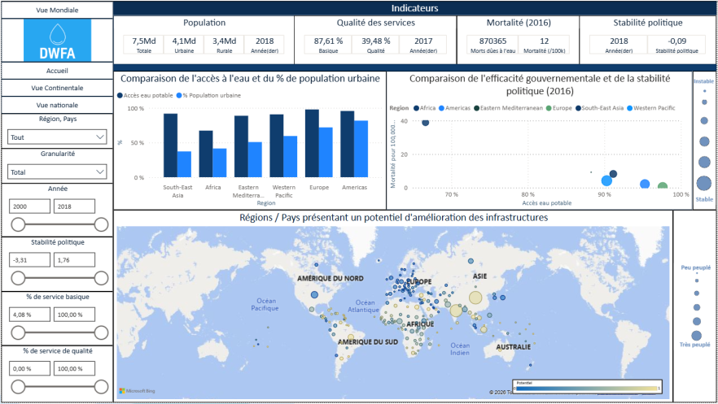

Étude sur l'accès à l'eau potable — Tableau de bord Power BI (DWFA)

De quoi s'agit-il ?
Mission réalisée pour DWFA (Drinking Water For All), une ONG dont l'ambition est de donner accès à l'eau potable à tous. L'association venait de solliciter un financement auprès d'un bailleur de fonds pour investir dans un de ses 3 domaines d'expertise (création de services, modernisation de services existants, consulting auprès de gouvernements), dans un pays encore indéterminé. Le besoin : un tableau de bord permettant d'identifier les pays en difficulté d'accès à l'eau potable et ceux sur lesquels concentrer les efforts, avec 3 niveaux de lecture (mondial, continental, national).
Sur quoi je me suis appuyé
- Source : jeu de données déjà collecté par un data engineer de l'ONG (indicateurs eau/santé de type OMS/FAO), accompagné d'un dictionnaire de données.
- Variables clés : population et densité, région, stabilité politique, qualité des services d'accès à l'eau (basique vs qualité), taux de mortalité lié à l'eau insalubre — avec une évolution disponible dans le temps.
- Structuration : modèle relationnel en étoile, avec chaque table de faits reliée à des tables de dimension (région, calendrier/année, granularité géographique).
- Qualité : vérification systématique que chaque pays est bien rattaché à une région dans la table de dimension, et traitement au cas par cas des valeurs manquantes lorsque c'était pertinent de les renseigner.
Comment j'ai procédé
- Cadrage en amont avec le commanditaire (compte-rendu de réunion de lancement) pour définir précisément les indicateurs à visualiser par vue, avant toute construction technique.
- Réalisation d'un mockup basse fidélité pour chacune des 3 vues (monde, continent, pays), validé avant le développement du tableau de bord final.
- Choix de l'outil : Power BI, retenu pour sa capacité à centraliser plusieurs sources (fichiers, SQL) et diffuser le résultat à un public varié (web, mobile, rapports).
- Construction d'un modèle de données relationnel plutôt qu'un tableau plat, pour permettre des filtres croisés (géographiques, temporels, qualitatifs) performants.
- Respect d'une charte imposée : palette de bleus, en cohérence avec le sujet de l'eau, sur l'ensemble des visualisations.
- Construction de 3 tableaux de bord dédiés, un par domaine d'expertise de l'ONG (voir résultats).
Ce que ça a produit
Trois tableaux de bord livrés, chacun répondant à un des domaines d'expertise de DWFA :
- Création de services : comparaison de l'accès à l'eau potable et du taux de population urbaine par région, faisant ressortir l'Afrique et l'Asie du Sud-Est comme zones à plus fort besoin d'infrastructures de base.
- Modernisation des services : carte mondiale du "potentiel d'amélioration des infrastructures" par pays, complétée d'un focus temporel (exemple détaillé sur la France) montrant l'évolution de l'accès basique vs qualité entre zones rurales et urbaines depuis 2000.
- Consulting : croisement entre efficacité gouvernementale (mortalité liée à l'eau) et stabilité politique par région, avec une vue temporelle permettant de suivre l'évolution conjointe de ces deux facteurs.
Le tableau de bord donne à DWFA un support concret et démontrable pour orienter sa demande de financement vers un pays et un domaine d'expertise précis.
Ce que je ferais différemment
La principale limite concerne les données elles-mêmes : le taux de mortalité liée à l'eau insalubre n'est disponible que pour l'année 2016, ce qui empêche de suivre son évolution récente contrairement aux autres indicateurs. La variable de qualité des services présente également de nombreuses valeurs manquantes selon les pays, ce qui limite la précision de l'analyse. Une piste d'amélioration évoquée en soutenance : disposer de plus de nuances dans la qualité des services (au-delà du simple "basique vs qualité") permettrait de mieux distinguer les pays réellement en manque d'infrastructures de ceux qui ont surtout un potentiel d'amélioration à exploiter — deux besoins différents qui appellent des réponses différentes de la part de DWFA.